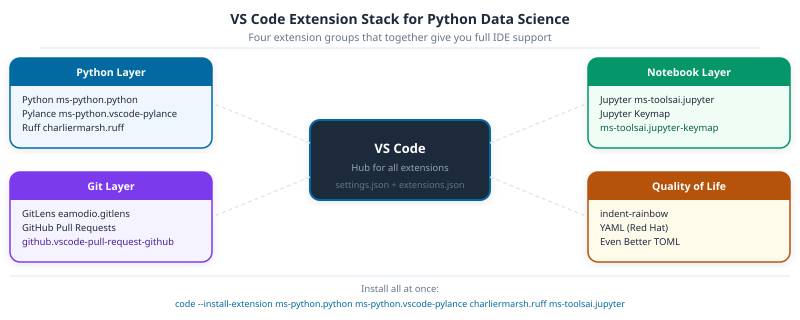

Part 12: IDE Setup with VS Code

DS-MLOps Dev Tools
Python 3.12+ | Author: Anthony Faustine You can run Python in any text editor. But without type hints catching errors before you run, function signatures appearing inline, and a terminal that already knows your project interpreter, you’re developing blind.
Setting up VS Code properly takes under 30 minutes. Part 14 (01-uv-project-setup.qmd) uses this editor to build and run a real project for the first time – so get this right first.
Callout markers used throughout this chapter are explained on the book cover page.
Every file in this book is written, run, and debugged in an editor. The configuration here – the right Python interpreter, format-on-save, and git integration – eliminates the friction that slows people down before they’ve written a single line of real code. Set it up once and it carries through every chapter that follows.
1. Installing VS Code
VS Code is a free, open-source editor from Microsoft. It runs on macOS, Linux, and Windows and has the largest Python extension ecosystem of any editor.
Download the installer for your platform from the official site:

Source: VS Code User Interface
macOS: open the downloaded .zip, drag Visual Studio Code.app to /Applications, then add the code CLI:
- Open VS Code
- Press
Cmd+Shift+Pto open the Command Palette - Type
Shell Command: Install 'code' command in PATHand press Enter
Linux (Debian/Ubuntu):
sudo apt install ./<downloaded-file>.debWindows: run the installer. The code CLI is added to PATH automatically.
Verify the CLI works:
code --versionInterface overview
The five areas you use most:
| Area | Shortcut | Purpose |
|---|---|---|
| Activity Bar (left strip) | (none) | Switch between Explorer, Search, Source Control, Extensions |
| Explorer | Cmd/Ctrl+Shift+E |
File tree, open editors |
| Command Palette | Cmd/Ctrl+Shift+P |
Find and run any VS Code command |
| Integrated Terminal | Ctrl+` |
Shell inside the editor: run uv, git, pytest |
| Status Bar (bottom) | (none) | Active Python interpreter, git branch, errors/warnings count |
2. Essential Extensions
The nine extensions below cover every layer of a DS/MLOps project:

Open the Extensions panel (Cmd/Ctrl+Shift+X) and install each of these. The extension ID is in parentheses; paste it into the search box for an exact match.
Core Python and linting
| Extension | ID | Purpose |
|---|---|---|
| Python | ms-python.python |
IntelliSense, debugging, test discovery |
| Pylance | ms-python.vscode-pylance |
Fast type-aware autocomplete (uses Pyright) |
| Ruff | charliermarsh.ruff |
Lint and format on save using the ruff binary |

Source: Ruff VS Code Extension
Jupyter notebooks
| Extension | ID | Purpose |
|---|---|---|
| Jupyter | ms-toolsai.jupyter |
Run .ipynb notebooks in VS Code |
| Jupyter Keymap | ms-toolsai.jupyter-keymap |
Classic Jupyter keyboard shortcuts |
Git and collaboration
| Extension | ID | Purpose |
|---|---|---|
| GitLens | eamodio.gitlens |
Inline blame, commit history, branch comparison |
| GitHub Pull Requests | github.vscode-pull-request-github |
Review and merge PRs without leaving the editor |
Quality of life
| Extension | ID | Purpose |
|---|---|---|
| indent-rainbow | oderwat.indent-rainbow |
Colour-coded indentation depth; helps in deeply nested config |
| YAML | redhat.vscode-yaml |
Schema validation for .pre-commit-config.yaml, _quarto.yml |
| Even Better TOML | tamasfe.even-better-toml |
Syntax and schema support for pyproject.toml |
Create
.vscode/extensions.json in your project root. When a teammate opens the project, VS Code prompts them to install all recommended extensions automatically:
{
"recommendations": [
"ms-python.python",
"ms-python.vscode-pylance",
"charliermarsh.ruff",
"ms-toolsai.jupyter",
"eamodio.gitlens"
]
}
3. Configuring settings.json
VS Code settings live in .vscode/settings.json inside the project (workspace settings) or ~/.config/Code/User/settings.json (user settings). Workspace settings are committed to git and shared with the team.
Create .vscode/settings.json in the grade-predictor project:
{
"[python]": {
"editor.defaultFormatter": "charliermarsh.ruff",
"editor.formatOnSave": true,
"editor.codeActionsOnSave": {
"source.fixAll.ruff": "explicit",
"source.organizeImports.ruff": "explicit"
}
},
"[jupyter]": {
"editor.defaultFormatter": "charliermarsh.ruff",
"editor.formatOnSave": true
},
"python.analysis.typeCheckingMode": "basic",
"python.analysis.diagnosticMode": "workspace",
"editor.rulers": [100],
"files.trimTrailingWhitespace": true,
"files.insertFinalNewline": true
}What each setting does:
editor.defaultFormatter: charliermarsh.ruff: ruff formats on every save, no Black neededsource.fixAll.ruff: auto-applies safe lint fixes (--fix) on savesource.organizeImports.ruff: sorts imports on save (isortrules)editor.rulers: [100]: vertical guide at column 100 (matchesline-length = 100inpyproject.toml)
Key Concept: Workspace settings override user settings
A teammate’s personal settings.json might use Black. They open your project, and the workspace .vscode/settings.json quietly overrides that for Python files only – their other projects aren’t touched. That’s how you enforce a consistent formatter across a team without overwriting anyone’s personal preferences.
Activity 1 - Format on Save
Goal: Create .vscode/settings.json with the configuration above. Open core.py, add an intentionally badly-formatted function, and save the file. Confirm that ruff reformats it automatically on save. The status bar at the bottom should show no ruff errors.
4. Pointing VS Code at the uv .venv Interpreter
After running uv sync, a .venv/ directory exists in the project root. VS Code needs to know about it – without this, autocomplete is guessing and code won’t run correctly.
Option A: Auto-detect (VS Code usually picks this up automatically):
- Open the project folder (
code .from the terminal) - Look at the bottom-right of the Status Bar, which shows the active Python interpreter
- Click it, then select the interpreter at
./.venv/bin/python
Option B: Set it explicitly in settings.json:
{
"python.defaultInterpreterPath": "${workspaceFolder}/.venv/bin/python"
}
Source: VS Code Python Environments
Once it’s set, IntelliSense for all packages installed by uv sync becomes available. Hover over a pandas function to see its signature; Cmd+Click jumps to the source.
Common Mistake: Using the system Python or a conda env instead of .venv
If the Status Bar shows Python 3.x.x 64-bit without a path, you’re on the system Python. Packages installed by uv sync won’t be visible, autocomplete will be incomplete, and notebooks will fail to import project dependencies. Always confirm the interpreter path ends with .venv/bin/python.
5. Jupyter Notebooks in VS Code
With the Jupyter and Python extensions installed, VS Code opens .ipynb files as interactive notebooks. The experience is close to JupyterLab with some advantages: IntelliSense works inside cells, you can set breakpoints in notebook code, and the Variable Inspector shows live DataFrame previews.

Source: VS Code Jupyter Notebooks
Key shortcuts for notebooks in VS Code:
| Action | Shortcut |
|---|---|
| Run cell and move to next | Shift+Enter |
| Run cell, stay | Ctrl+Enter |
| Insert cell above / below | A / B (in command mode) |
| Toggle cell type (code/markdown) | M / Y |
| Restart kernel | Cmd/Ctrl+Shift+P → “Restart Kernel” |
| Open Variable Inspector | Cmd/Ctrl+Shift+P → “Jupyter: Variables” |
Select the kernel: when you first open a notebook, VS Code asks which kernel to use. Choose the .venv Python interpreter – that’s what ensures every import in the notebook finds the packages installed by uv sync.
Activity 2 - Run a Notebook in VS Code
Goal: Open tutorials/01-python-basics/11-pandas-core.ipynb in VS Code. Select the .venv kernel. Run the first three cells with Shift+Enter. Open the Variable Inspector and confirm the DataFrame is visible. Change one cell to produce a different output and save.
6. Git and GitLens in VS Code
VS Code’s built-in Source Control panel (Cmd/Ctrl+Shift+G) shows every modified file as a coloured indicator in the Explorer. From there you can stage, commit, and push without ever touching the terminal.

Source: VS Code Source Control
GitLens features
GitLens enhances the built-in git support. Three features you’ll reach for most in DS work:
Inline blame: hover over any line to see who wrote it and when – indispensable when you’re debugging a pipeline step someone else wrote.
File History: right-click a file → “Open File History” to see every commit that touched it as a timeline.
Branch comparison: in the GitLens sidebar, compare two branches to see exactly which files and lines differ, useful before opening a PR.

Source: GitLens documentation
GitHub Pull Requests extension
With the GitHub Pull Requests extension, you can:
- See open PRs in a sidebar panel
- Leave inline review comments directly in the diff view
- Check out a PR branch with one click
- Merge a PR without leaving VS Code
Pro Tip: Use the editor’s diff view to review your changes before committing
Click any modified file in the Source Control panel to open a side-by-side diff. It’s the fastest way to catch accidental changes – a stray debug print, a hardcoded path, a dropped import – before they’re in git history permanently.
7. Integrated Terminal
The integrated terminal (Ctrl+`) opens a shell inside VS Code with the current project directory already set. Split it into multiple panes to run a test suite in one and a Quarto preview in another – no window switching needed.
# Run in the integrated terminal exactly as you would in a standalone shell
uv run ruff check .
uv run pytest tests/ -v
uv run quarto previewVS Code activates the .venv environment automatically in the integrated terminal when it detects a workspace interpreter. Confirm it’s working:
which python
# /path/to/grade-predictor/.venv/bin/pythonGoal: Without leaving VS Code, complete this sequence:
-
Open the integrated terminal. Run
uv run ruff check src/and fix any findings. - Open the Source Control panel. Stage the changed files and write a conventional commit message.
-
Use the GitLens File History on
core.pyto view its commit history. - Push the commit using the Source Control panel’s sync button.
Capstone - A Configured Development Environment
Set up your grade-predictor project so the full Dev Tools stack runs seamlessly inside VS Code.
- Install all extensions listed in Section 2
-
Create
.vscode/settings.jsonwith format-on-save and the ruff formatter -
Create
.vscode/extensions.jsonwith the five core extension recommendations -
Confirm VS Code is using
.venv/bin/pythonas the interpreter -
Open a notebook, select the
.venvkernel, and run it top to bottom without errors - Make a small change, stage it in the Source Control panel, and commit with a conventional commit message
Next: Part 13: Project Setup with uv – where you’ll build the grade-predictor project that the rest of Part 3 operates on.